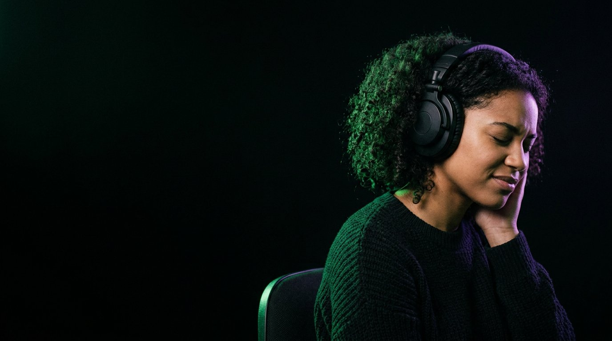

Six faces, une par section. Des pads qui jouent toujours juste. Un chef d’orchestre qui comprend ce que tu lui demandes. Tu retournes le cube, le morceau existe.
Ouvrir le studioLa même grille sur chaque face : batterie, basse, accords, mélodie. Seize pads qui jouent toujours juste, dans la tonalité et sur le temps.
Attrape le cube, retourne-le. Il retombe sur une face : tu es dans l’intro, le refrain, le pont.
Un pad, trois états : éteint, présent, fort. Tu l’entends tout de suite. Pas de piste à régler, pas de fausse note possible.
« Ajoute une mélodie au refrain. » « Couplet plus sobre. » « 84 BPM, mineur. » Le chef d’orchestre modifie le cube et te dit ce qu’il a fait.
Pas des boucles collées : une tonalité, une progression par section, des voix conduites d’un accord à l’autre, une dynamique qui monte vers le refrain.
Instruments enregistrés — batterie, piano, basse, guitare, 808 — libres de droits.

Pas de timeline, pas de pistes à faire défiler. Les faces sont les sections, les rangées sont les instruments, et le chef d’orchestre au centre comprend ce que tu lui demandes.
Chaque projet est un morceau complet, rejouable note pour note, et qui sort du cube.